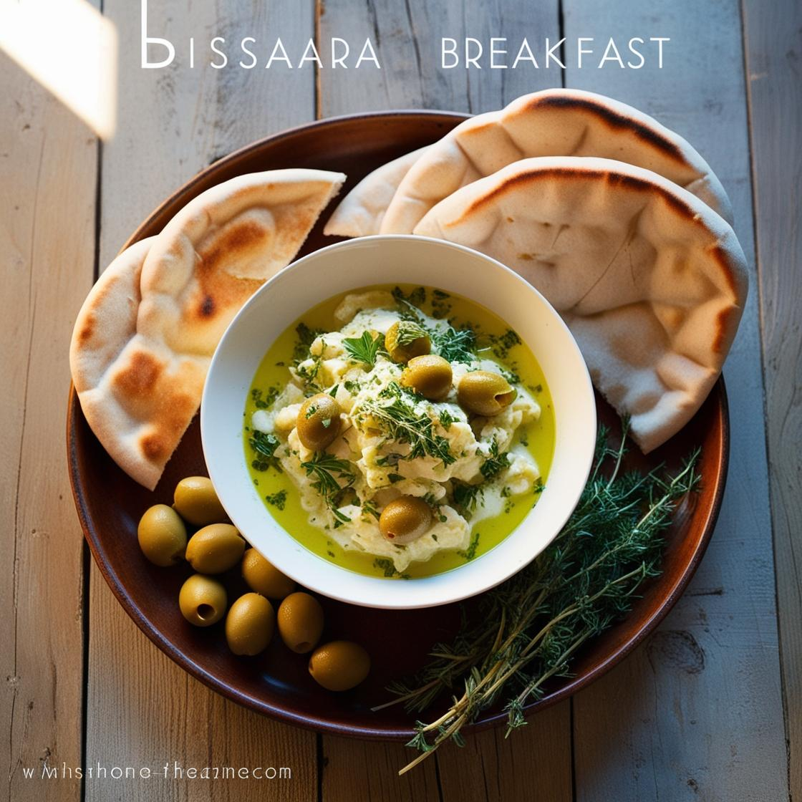
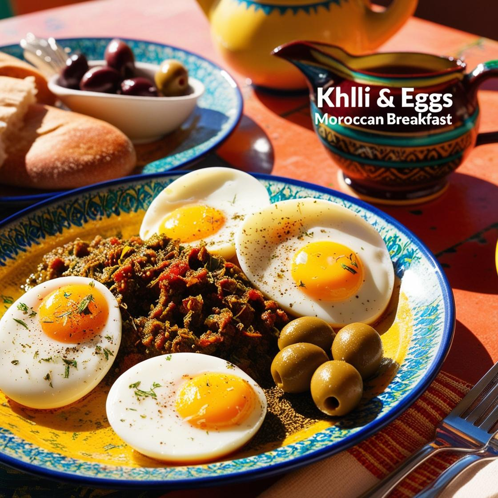
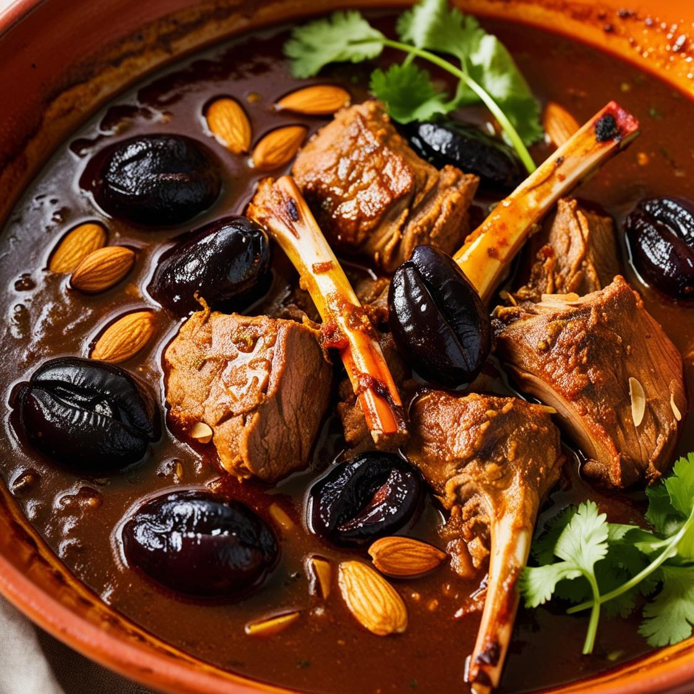
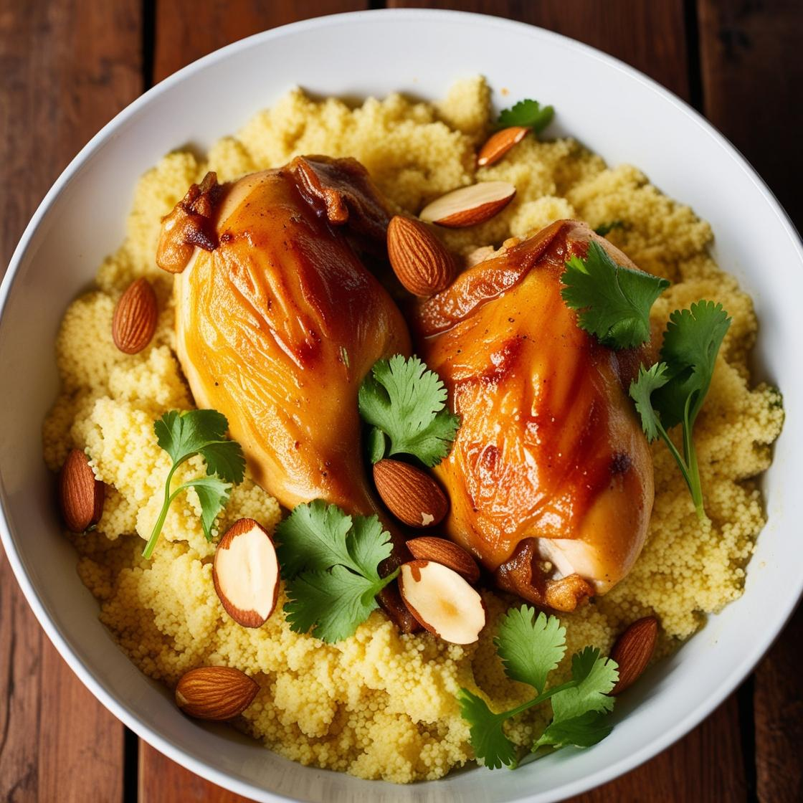
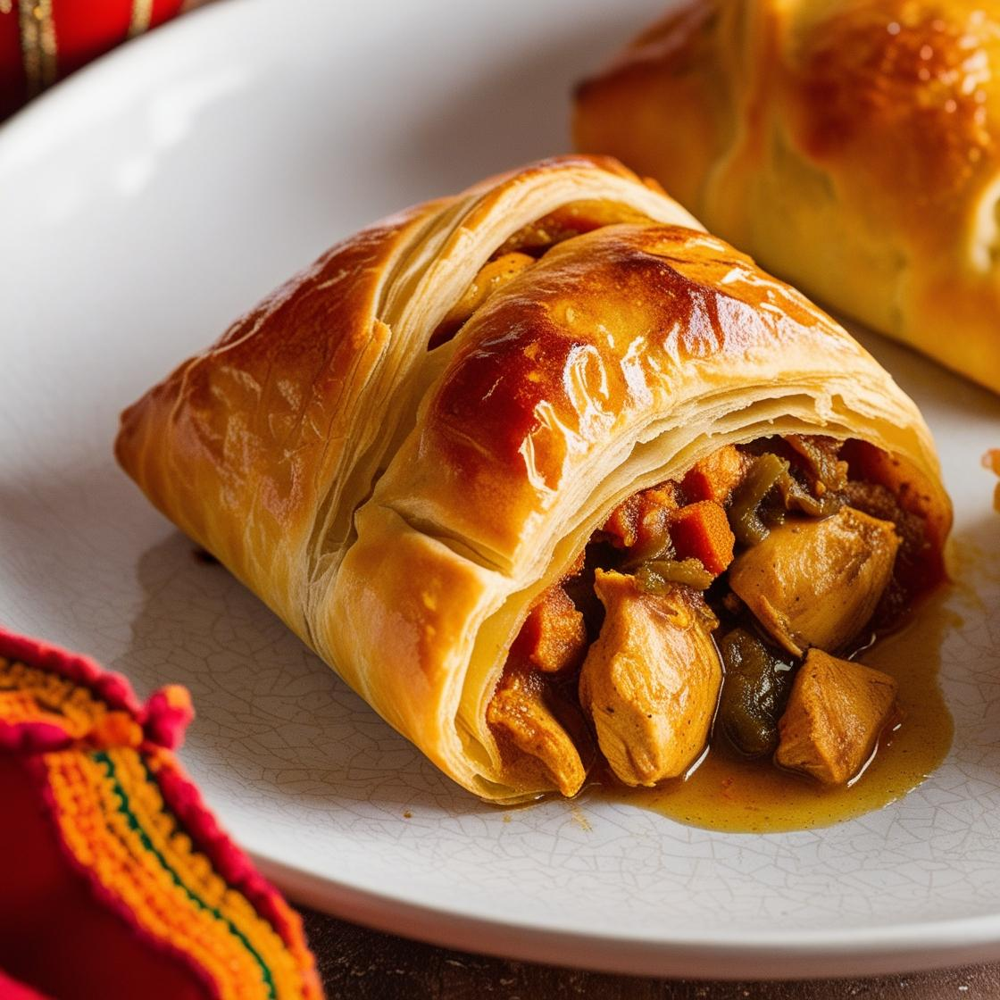
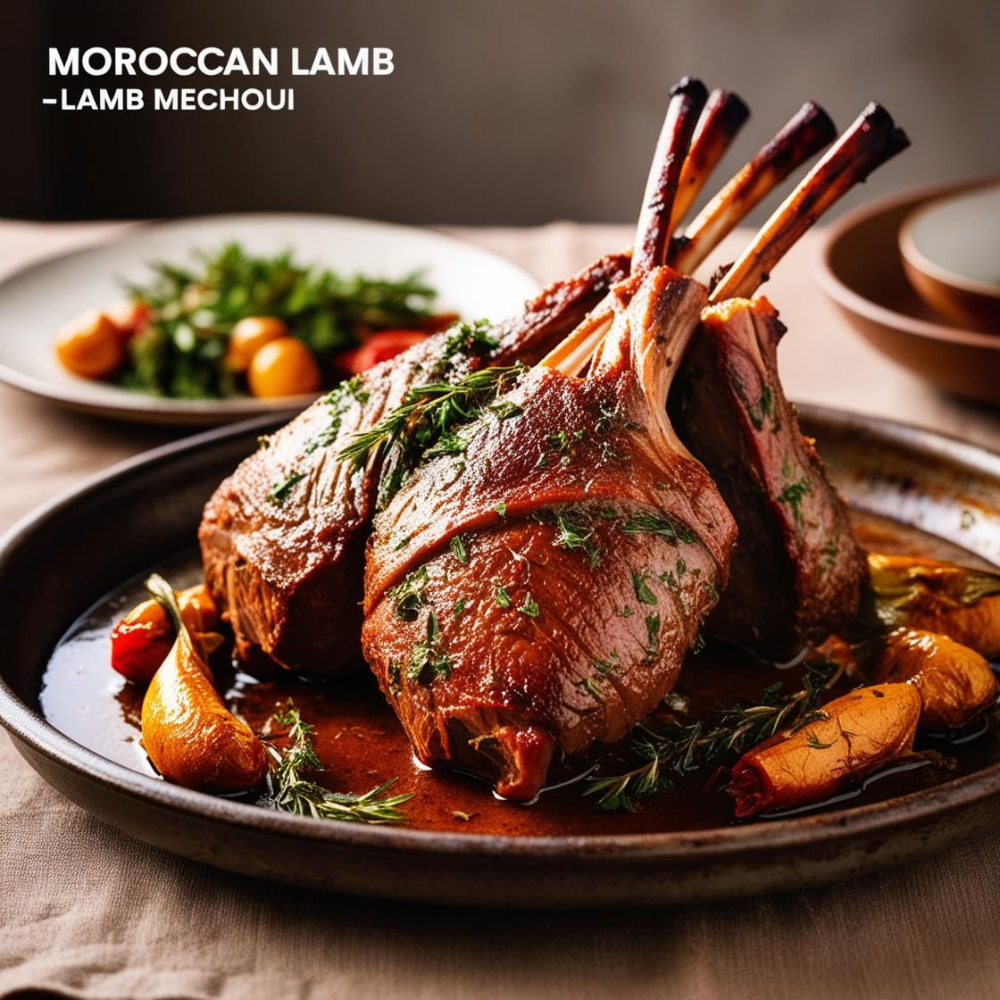

Desayuno
Msemen
Panqueque o crepe,ligeramente frito hasta quedar crujiente por fuera y suave por dentro
Baghrir
Crepe esponjoso hecho con sémola
Bissara
Sopa espesa hecha de habas o guisantes secos, sazonada con comino y aceite de oliva
Khlii y huevos
Carne de cordero o res curada y conservada en grasa, acompañada con huevos
Comida
Tajín de cordero con ciruelas
Carne tierna y suculenta del cordero con el dulzor de las ciruelas secas, especias como canela y comino
Cuscús con siete verduras y pollo
Sémola de trigo cocida al vapor, se sirve con una colorida mezcla de siete verduras como zanahorias, calabacines, y nabos, acompañados de garbanzos y especias aromáticas.
Pastilla de pollo
Pastel hojaldrado relleno de pollo desmenuzado, almendras trituradas, y sazonado con una mezcla de canela y azúcar.
Mechoui de cordero
Cordero asado a fuego lento, tradicionalmente cocinado en un horno de barro o sobre brasas. Con un adobo de especias que incluye comino y ajo.